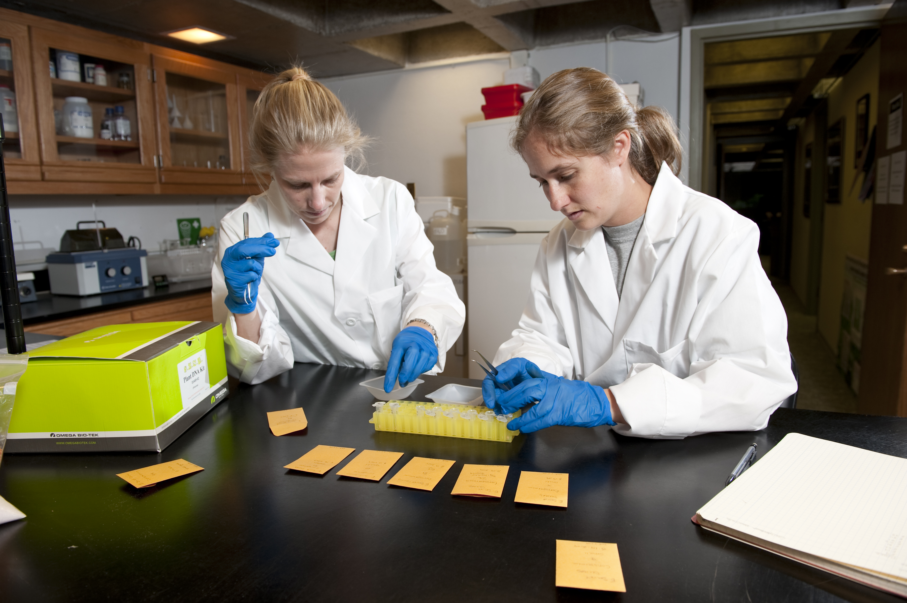

Extracting DNA
When extracting DNA from tissue samples, you essentially create a new asset from an existing one. To keep track of these assets and how they are related, use the Extraction Project tool on the Research Database Website. See DNA Data Submission Section Each project may have different goals and be working with different materials. Therefore, each project leader is responsible for deciding which extraction method best suites their study, for training lab technicians, and for providing proper protocols and resources.